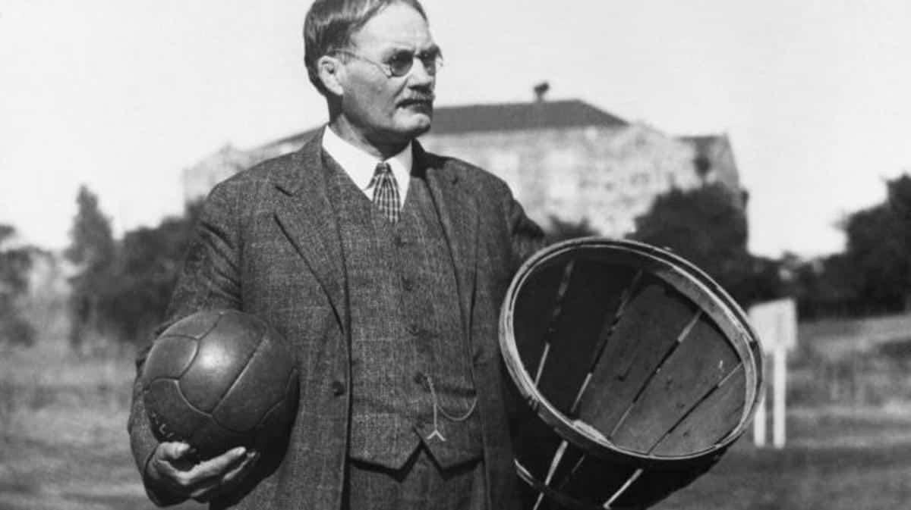

História
O basquete foi criado nos Estados Unidos em 1891 pelo professor de Educação Física canadense James Naismith, da escola da Associação Cristã de Moços,
que buscava uma atividade em um ginásio para manter seus alunos aquecidos no rigoroso inverno da cidade de Springfield. Ele se inspirou na mania dos
alunos e dos funcionários da escola de sempre atirar objetos à distância nos cestos de lixo.
No início, a bola era arremessada em cestas de pêssego. Adaptados para o jogo, os cestos ficavam presos com pregos a pilastras, já numa altura de 3,05m,
mantida até hoje. Só depois de algum tempo, tirou-se o fundo do cesto, evitando que a partida fosse paralisada a cada arremesso convertido. Das 13
regras formuladas por Nashville na criação do basquete, a maioria ainda se aplica hoje.

Fundamentos
Drible: Controle da bola quicando-a com uma das mãos, permitindo avançar pela quadra.
Passe: Jogar a bola para um companheiro de equipe, podendo ser feito com a mão, com o peito, quicado, de ombro ou por cima da cabeça.
Arremesso: Lançar a bola em direção à cesta para pontuar, como o arremesso de bandeja ou o jump shot.
Rebote: Disputa da posse da bola após um arremesso não convertido, podendo ser ofensivo ou defensivo.
Defesa: Impedir que o adversário marque pontos, seja por meio da marcação individual (seguindo o adversário) ou por marcação em zona (defendendo uma determinada área da quadra).
Marcação: Técnica defensiva que envolve seguir o adversário, tentar roubar a bola, bloqueá-lo ou dificultar seu arremesso.
Corta-luz: Movimento defensivo que impede que o adversário passe ou receba a bola, geralmente usado em situações de pressão.
Fintas: Movimentos enganosos que visam confundir o adversário, criando oportunidades de ataque ou defesa.
Controle do corpo: Manter a postura correta, com os joelhos flexionados e a cabeça levantada, para ter mais controle e equilíbrio na quadra.
Bandeja: Arremesso próximo à cesta, geralmente em duas passadas, após o drible ou passe.
Rebote: Disputa da posse da bola após um arremesso não convertido, podendo ser ofensivo ou defensivo.
Jump: Arremesso que envolve um salto para cima, geralmente usado para alcançar a cesta com maior facilidade.
Entrada: Arremesso de dois pontos ou menos que pode ser feito em um lance livre ou de dentro da área.
Toco: Interceptação de um arremesso, impedindo que o adversário marque pontos.
Quadra
Uma partida de basquete
Clique aqui para ver a partida